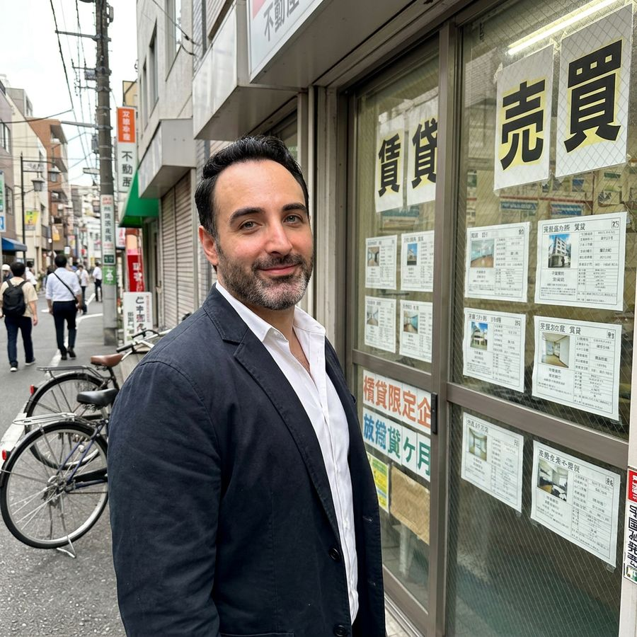
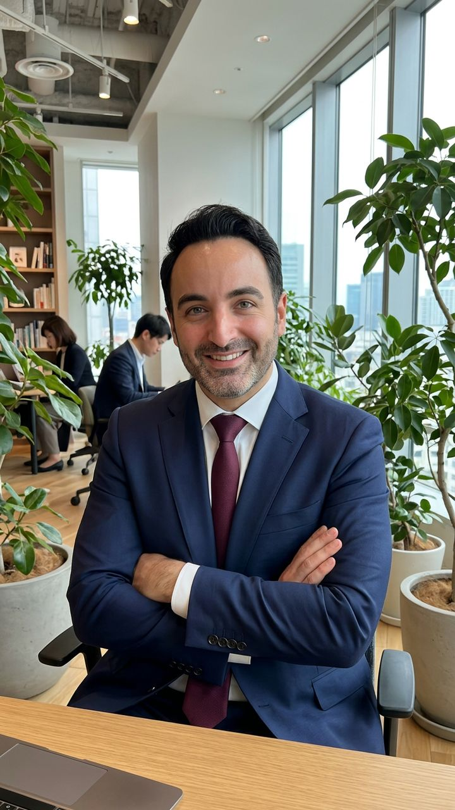
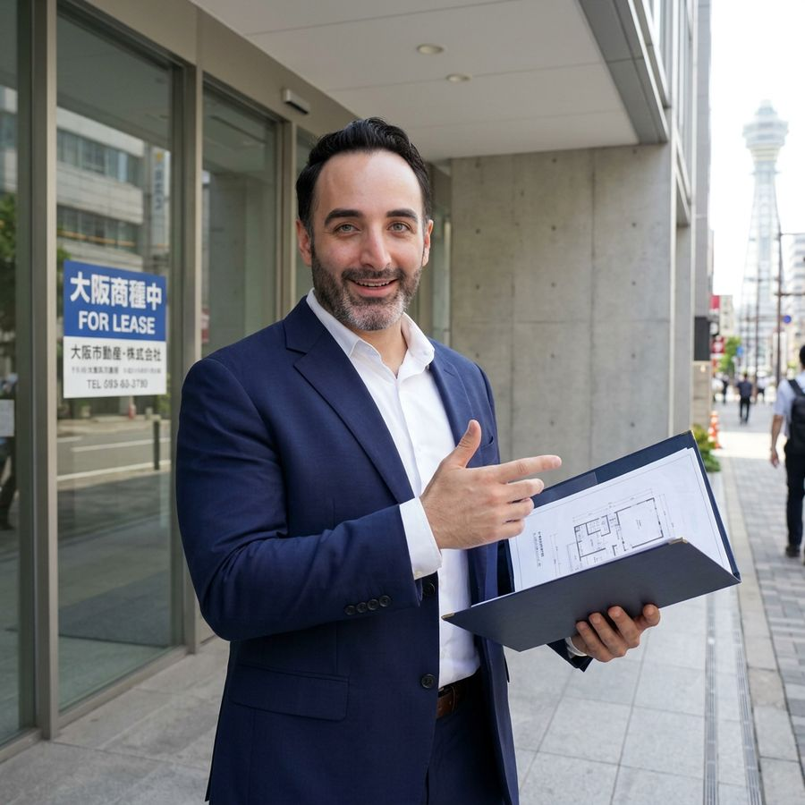

Japonya'daki Yerel Temsilciniz
Konaklama, Yerleşim ve Ticari Çözüm Ortağı
Japonya'daki işleriniz, yerinde ve tek muhatapla çözülsün.
Japonya'ya gelmeden önce de, geldikten sonra da yanınızdayız. Konaklamanızı, yerleşiminizi ve ticari bağlantılarınızı sizin adınıza yerinde takip ediyor, dil ve mesafe engelini sizin için ortadan kaldırıyoruz.
Hizmet bölgemizOsakaKobeKyoto
Japonya Destek, Japonya'da uzun yıllardır yaşayan ve yerel mevzuata uygun çalışan bir danışmanlık platformudur. Resmî ve operasyonel süreçlerde doğrudan sahada destek veriyoruz.
Japonya'nın kendine özgü idari yapısında ve iş dünyasında başarılı olmak için yalnızca dili bilmek yetmez. Sahadaki pratik deneyim ve yasal yetkinlik de gerekir.
Üç alanda çalışıyoruz. İhtiyacınız hangisine girerse girsin, muhatabınız aynıdır. Hizmetlerimizi Osaka, Kobe ve Kyoto'da yerinde sunuyoruz.

Gelmeden yerinizi bulun, geldiğinizde hazır bir düzene adım atın.

Japonya'daki tedarik ve iş bağlantılarınız için yerel bir göz, yerel bir ses.

Karar vermeden önce mülkü yerinde, doğru bilgiyle görün.
Uzaktan yönetilen işler çoğu zaman yarım kalır. Yerinde biri olunca kalmaz.

İster kısa bir ziyaret, ister yeni bir hayat olsun. Kâğıt işlerini, kiralamayı ve resmî adımları biz üstleniriz, siz de Japonya'nın tadını çıkarırsınız.


Japonya'daki süreçler hakkında merak ettikleriniz. Aklınıza takılan başka bir konu varsa bize doğrudan yazabilirsiniz.
Konaklama ve yerleşim desteği, emlak araştırma ve yerinde inceleme, tedarikçi ve fabrika araştırması, numune temini, fuar temsilciliği ve Japon iş ortaklarıyla iletişim konularında destek sağlıyoruz.
Evet. Japonya'ya gelmeden önce konaklama seçeneklerini araştırabilir, ihtiyaçlarınızı netleştirebilir ve gelişiniz için hazırlık yapabilirsiniz. Süreci sizinle iletişim halinde yürütürüz.
Hayır. Uygun olan araştırma ve takip işleri için Japonya'da olmanız gerekmez. İhtiyacınıza göre yerinde inceleme yapar, gördüklerimizi ve süreçteki gelişmeleri size aktarırız.
Evet. Bütçenize ve tercihlerinize uygun kiralık konutları araştırabilir, kiralama sürecinde size eşlik edebilir ve sözleşme ayrıntılarını Türkçeye aktarabiliriz.
Evet. Kefil şirketi (guarantor company), depozito (Shikikin), anahtar parası (Reikin) ve kiralama koşulları gibi konuları açıklayarak süreci daha anlaşılır hale getirmenize yardımcı oluyoruz.
Belirttiğiniz bölge ve kriterlere göre mülk seçeneklerini araştırıyor, uygun olduğunda yerinde inceleme yapıyor ve gözlemlerimizi size iletiyoruz. Sözleşme ayrıntıları ve masrafları da Türkçeye aktarabiliriz.
İhtiyacınıza göre Japonya'daki tedarikçi ve fabrikaları araştırabilir, ilk iletişimi kurabilir, numune talebini ve takip sürecini sizin adınıza yürütebiliriz.
Evet. Fuar katılımında firmanızı yerinde temsil edebilir, görüşmeleri takip edebilir ve elde ettiğimiz bilgileri size aktarabiliriz. Kapsamı ihtiyaçlarınıza göre görüşmede netleştiririz.
Ücret, talep ettiğiniz hizmetin kapsamına ve yapılacak çalışmaya göre belirlenir. İhtiyacınızı paylaştığınızda seçenekleri ve kapsamı birlikte netleştirir, başlamadan önce ücretlendirme hakkında bilgi veririz.
Randevu formunu doldurabilir ya da WhatsApp ve LINE üzerinden bize yazabilirsiniz. İhtiyacınızı kısaca anlatmanız yeterli; uygun hizmeti ve sonraki adımları birlikte belirleriz.
Yerinde hizmetlerimizi Osaka, Kobe ve Kyoto'da veriyoruz. Tokyo ve diğer şehirlerde yerinde hizmetimiz bulunmuyor.
Üç adımda başlıyoruz. İlk adım için hazırlık yapmanız gerekmez.
Uygun gün ve saati seçin, talebiniz doğrudan bize e-posta ile ulaşsın. Saatler Japonya saatine (JST) göredir. Türkiye saati (TSİ) Japonya'dan 6 saat geridedir. Onayı size mesajla ileteceğiz.
QR kodu telefonunuzla okutun ya da düğmeye dokunun. Hemen yazışmaya başlayalım.